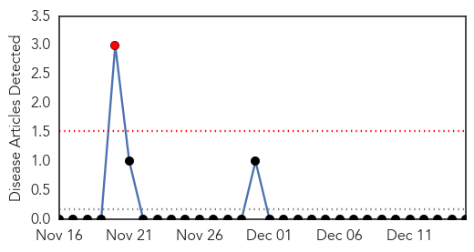

Pertussis
30-Day Web Trend
5 alerts, 0 warnings
30-Day Twitter Trend
0 alerts, 0 warnings

Article Locations
Article Confidences
Top Articles:
- 0.986
- Vaccinations: 5 common questions from readers answered
- 0.984
- Whooping cough, flu cases reported in the area
- 0.936
- Whooping cough epidemic: California's worst in 70 years
- 0.930
- California battles whooping cough epidemic; O.C. faring better than rest of state
- 0.802
- Whooping cough epidemic escalates in California
- 0.680
- Gallatin Co. Health Dept. explains best practices for whooping cough prevention
- 0.680
- Gallatin Co. Health Dept. explains best practices for whooping cough prevention
Top Tweets:
-
No tweets found for Dec 15, 2014
Yellow Fever
30-Day Web Trend
1 alerts, 0 warnings

30-Day Twitter Trend
0 alerts, 0 warnings

Article Locations

Article Confidences

Top Articles:
-
No articles found for Dec 15, 2014
Top Tweets:
-
No tweets found for Dec 15, 2014